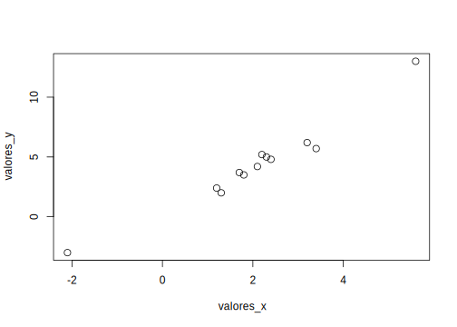
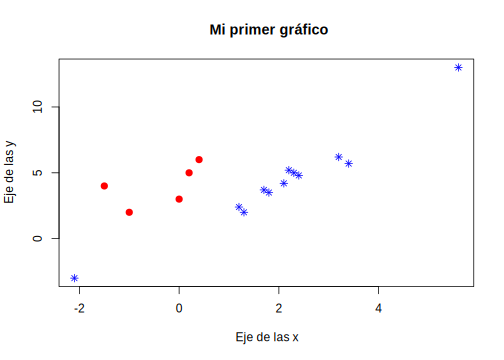

Capítulo 10 Gráficos
Las funciones de gráficos que conforman el sistema de gráficos tradicional del lenguaje de programación R están en el paquete llamado graphics, el cual es un paquete que se encuentra en la base del programa. En esta sección presentaremos algunas funciones que trae dicho paquete para realizar los gráficos elementales.
Existen otros paquete más vanzados para realizar gráficos entre ellos tenemos lattice y ggplot2, estos están basados en el sistema de cuadrícula.
10.1 Gráfico de Puntos
La función más utilizada para realizar gráficos es plot(), el gráfico que da por defecto está función es el gráfico de puntos, donde cada punto corresponde a cada coordenada de valores introducido en los parámetros de entrada, a este tipo de gráfico generalemente se le denomina diagrama de dispersión de puntos de \(y\) frente a \(x\).
La mayoria de sus argumentos de entrada son compartidos con el resto de las funciones para realizar gráficos. Para un uso simple de dicha función basta con pasar dos vectores del mismo tamaño con las coordenadas o valores correspondientes para los ejes \(x\) y \(y\).
valores_x <- c(1.2,3.4,1.3,-2.1,5.6,2.3,3.2,2.4,2.1,1.8,1.7,2.2)
valores_y <- c(2.4,5.7,2.0,-3,13,5,6.2,4.8,4.2,3.5,3.7,5.2)
plot(x=valores_x,y=valores_y)
Entre sus parámetros de entrada tenemos:
xey: Vectores con los valores correspondientes a cada par ordenado de puntos.pch: Este argumento cambia la forma de los puntos para realizar la nube de puntos, en la figura podemos ver algunos ejemplos de estas formas.
Algunas formas disponibles para los puntos en los Gráficos
col: Carácter que específica el color que van a tener los puntos (o cualquier forma seleccionada) en el gráfico. La manera más usual para colocarlo es con el nombre respectivo en ingles.xlab,ylab: Reciben una cadena de caracteres con los nombres respectivos para etiquetar los ejes del gráfico.main: Recibe una cadena de caracteres con el título del gráfico.
plot( x=valores_x, y=valores_y, pch=8, col="blue", xlab = "Eje de las x",
ylab = "Eje de las y", main = "Mi primer gráfico")
En caso de que se quieran agregar puntos adicionales al gráfico que ya hemos construido podemos usar la función points(), esta función recibe los mismos parámetros de entrada que la función plot().
x_1 <- c(-1,0,-1.5,0.2,0.4)
y_1 <- c(2,3,4,5,6)
plot( x=valores_x, y=valores_y, pch=8, col="blue", xlab = "Eje de las x",
ylab = "Eje de las y", main = "Mi primer gráfico")
points( x=x_1, y=y_1, pch=16, col='red')
Para agregar una leyenda usamos la función legend(), ésta tiene como parámetros de entrada los siguientes:
xey: las coordenadas donde se quiere que aparezca la leyenda.legend: Un vector de caracteres con las leyendas respectivas.type: El tipo o forma que tiene gráfico, puede ser un gráfico de puntosp, de línealo de amboso.bty: Para colocar la leyenda dentro de una caja, toma dos valoresopara que aparezca dentro de una caja ynpara que no.También se le puede específicar el color
colla forma de los puntospch.
plot( x=valores_x, y=valores_y, pch=8, col="blue", xlab = "Eje de las x",
ylab = "Eje de las y", main = "Mi primer gráfico")
points( x=x_1, y=y_1, pch=16, col='red')
legend(x=4, y=0, col=c('blue','red'), pch=c(8,16),legend = c('Puntos azules', 'Puntos rojos'),bty = 'n')
10.2 Gráfico de líneas
Los gráficos de líneas son un caso particular de la función plot(), esta función tiene argumento de entrada llamado type, éste parámetro de entrada puede ser:
ppara puntos, el cual es el valor que toma por defecto.lpara lineas.bpara ambos lineas y puntos.cpara las lineas entre cada punto.opara ambos ‘overplotted’.hpara un histograma.spara gráfico de saltos.SPara otro tipo de gráfico de escaleras.npara no dibujarlos.
Entonces simplemente colocamos los valores respectivos de las coordenadas de los ejes en la función plot() y en el argumento type lo colocamos igual a l.
plot( x=sort(valores_x), y=valores_y, type = "l", xlab = "Eje de las x",
ylab = "Eje de las y", main = "Gráfico de Línea", col="blue")Si se quiere agregar otra línea al gráfico ya construido se usa la función lines(), está función recibe los mismos argumentos que la función plot().
plot( x=sort(valores_x), y=valores_y, type = "l", xlab = "Eje de las x",
ylab = "Eje de las y", main = "Gráfico de Línea", col="blue")
x_1<- c(-2,0,0.5,1,3,5.6)
y_1<- c(2,5,7,6,8,9)
lines(x=x_1, y=y_1, col='red')
10.3 Gráfico de Tortas
Los gráficos de tortas se usan para representar las frecuencias de las diferentes clases dentro de un conjunto de datos, la función que se usa para realizar este tipo de gráfico es pie(), entre los argumentos de entrada encontramos:
x: Se le asignará un vector que contenga las frecuencias respectivas a cada clase.labels: Un vector de caracteres con los nombres correspondientes a cada clase, es decir, con las etiquetas.col: Un vector de caracteres con los colores que se quieran para cada clase.Muchos de los parámetros gráficos que usa la función
plot().
slices <- c(10, 12,4, 16, 8)
lbls <- c("US", "UK", "Australia", "Germany", "France")
pie(x=slices, labels = lbls, main="Gráfico de Torta de las Ciudades")
10.4 Barplot
Comunmente llamados gráficos de barra, estos suelen ser muy utiles para visualizar las frecuencias de clases cuando se tienen pocas, los representa en barras rectangulares de longitudes proporcionales a los valores representados. La función que se utiliza para la construcción de estos es barplot(), ésta comparte la mayoria de los parámetros de entrada de las funciones anteriores, en el parámetro height se deben pasar los valores que tomarán cada barra, este puede ser un vector con los valores correspondientes para cada barra, o una matriz; con el parámetro horiz (toma los valores TRUE o FALSE) indicamos si las barras se muestran en sentido horizontal o vertical; para colocarle etiquetas a las barras se debe usar el parámetro names.arg, donde se le debe asignar un vector con las etiquetas, o se puede usar la función names().
large.islands <- head(sort(islands, decreasing=TRUE), 10)
barplot( height=large.islands, col='blue', names.arg = c('As','A','NA','SA','An','E','Au','G','NG','B'),
main = "Superficie terrestre de los continentes e islas",
ylab = "Superficie en millas cuadradas")
barplot( height=large.islands, col='blue', horiz = TRUE,
main = "Superficie terrestre de los continentes e islas",
ylab = "Superficie en millas cuadradas")
10.5 Boxplot
Este es un gráfico muy usado cuando se realizan estudios estadísticos, debido a que muestra características muy representativas de los datos, estos valores son el mínimo, el máximo, el primer cuartil, la mediana y el tercer cuartil; este gráfico también muestra valores que distan considerablemente del resto de los datos, llamados datos outliers, que pueden ser errores de medición y suelen eliminarse para evitar distorsión en las conclusiones. La función que usaremos para realizar estos gráficos es boxplot(), este comparte los parámetros de la función plot().
Como ejemplo usaremos los datos guardades en airquality, el cual es un data.frame con seis variables, estos datos contienen las mediciones diarias de la calidad del aire en Nueva York entre los meses de Mayo a Septiembre de 1973.
boxplot( x = airquality$Ozone,col = "orange", border = "blue",
main = "Media del Ozono en partes por millon en Roosevelt Island",
xlab = "Partes por millon", ylab = "Ozone")
Estos gráficos son muy utiles cuando se quieren comparar distintas poblaciones, para este caso se deben pasar los vectores correspondientes a cada variable o muestra, veamos un ejemplo con los datos de airquality.
boxplot( airquality$Ozone, airquality$Solar.R,
col = c('blue','orange'), names = c("ozone", "Solar"),
main = "Media del Ozono en partes por millon en Roosevelt Island",
xlab = "Partes por millon", ylab = "Ozone")
10.6 Histogramas
Los histogramas son la representación gráfica de las frecuencias (absolutas o relativas) de los valores de un vector, ésta representación se muestra en barras cuyo tamaño es proporcional a la cantidad de datos de la muestra que hay en cada clase o ventana; la función que usamos para construir los histogramas es hist() y este comparte la mayoria de los argumentos de la función plot(), entre los argumentos que se destacan para dicha función son:
breaks: Número de ventanas o celdas que tendrá el histograma.freq: Es un valor lógico, en caso de ser verdadero muestra en cada barra la frecuencia adsoluta, es decir, la cantidad de datos de la muestra que caen en la misma, si es falsa muestra la frecuencia relativa, es la división de la cantidad de datos que caen en dicha celda dividido por la cantidad total de datos.
hist( x = airquality$Ozone, col = "orange", border = "blue",
freq = FALSE,
main = "Histograma de la Media del Ozono",
xlab = "Partes por millon", ylab = "Ozone")
10.7 Multiple gráficos por ventanas
Supongamos que queremos mostrar más de un gráfico en una ventana, esto lo hacemos con la función par() específicando el argumento mfrom al cual se le debe asignar un vector con dos elementos, esta orden construira una ventana y hará la división de la ventana tomando el primer elemento del vector para el número de filas y el segundo para el número de columnas, y en cada cuadrícula ira colocando los gráficos.
par(mfrow=c(1,2))
hist(airquality$Ozone, col='blue', main = "Histograma datos de Ozono")
hist(airquality$Solar.R, col='orange', main = "Histograma datos de Solar")
10.8 Guardar gráficos
Muchas veces se desean guardar los gráficos que generamos con el lenguaje de programación R, la manera de hacerlo es usando el comando jpeg(), en el cual le específicamos la ruta donde guardaremos dicha imagen con su respectivo nombre (argumento file), dentro de los argumentos de entrada de esta función podemos especificar la altura y el ancho de la imagen en pixels con height y width, respectivamente, también se le puede específicar la calidad de compresión en el argumento quality el cual toma un valor entre 0 y 100. Seguido de dicha instrucción debe colocarse el gráfico que se quiere guardar y para cerrar dicho gráfico se usa el comando dev.off().
jpeg(file="imagen.jpg", quality = 60)
plot(x=1:20,y=21:40)
dev.off()## pdf
## 2